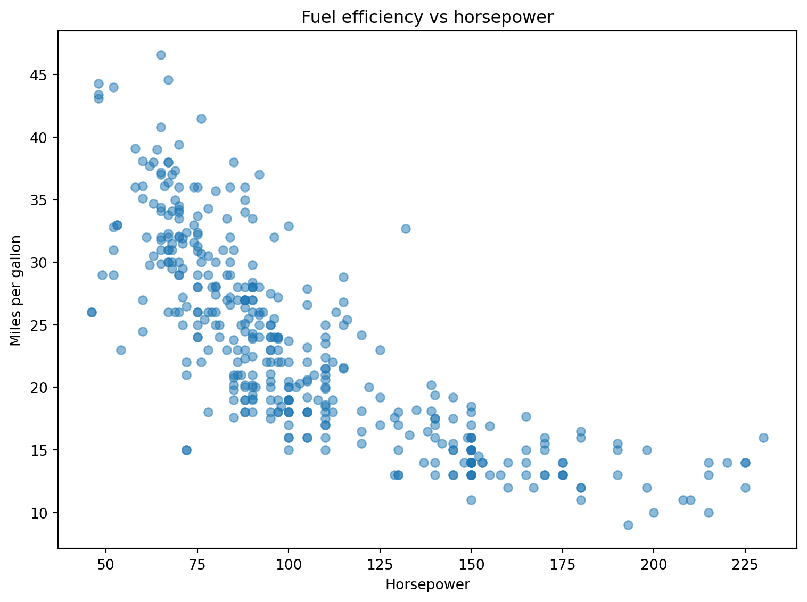
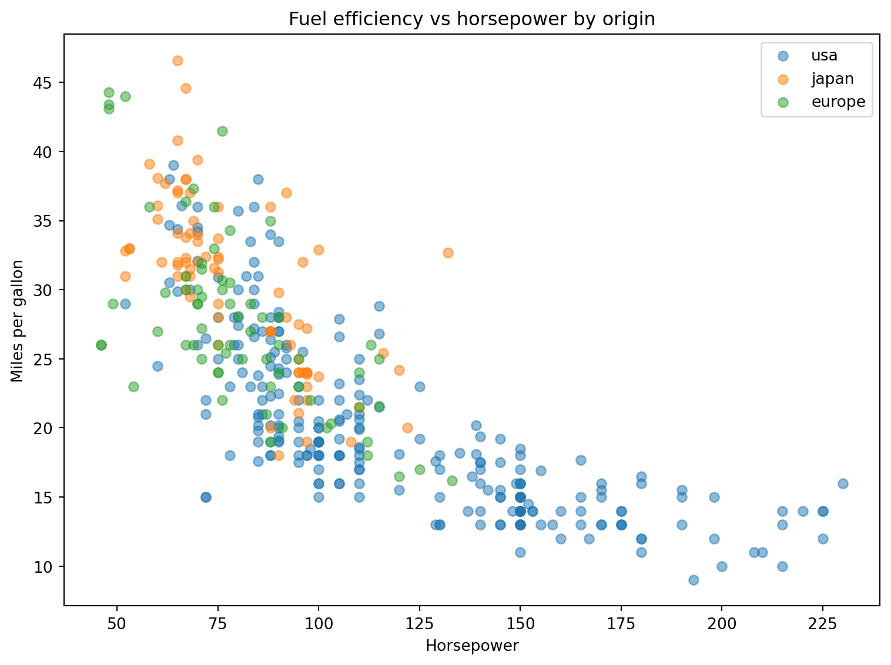

We introduce statsmodels’ formula API for estimating linear regression models in Python, and cover how to extend a basic model with multiple predictors, categorical variables, polynomial terms, and interactions.
import pandas as pdimport numpy as npimport statsmodels.formula.api as smfgapminder = pd.read_csv("data/gapminder.csv")gap_2007 = gapminder[gapminder["year"] ==2007].copy()gap_2007["log_gdp"] = np.log(gap_2007["gdpPercap"])gap_2007["pop_millions"] = gap_2007["pop"] /1_000_000# --- Simple OLS regression ---# The tilde separates the dependent variable (left) from the explanatory variable (right)model = smf.ols("lifeExp ~ log_gdp", data=gap_2007).fit()print(model.summary())# --- Multiple regression ---# Add more explanatory variables with +model_multi = smf.ols("lifeExp ~ log_gdp + pop_millions", data=gap_2007).fit()print(model_multi.summary())# --- Categorical variables ---# Wrap categorical variables in C() to include them as dummy variablesmodel_cat = smf.ols("lifeExp ~ log_gdp + C(continent)", data=gap_2007).fit()print(model_cat.summary())# --- Polynomial terms ---# Use I() to include transformed terms in the formulamodel_poly = smf.ols("lifeExp ~ log_gdp + I(log_gdp)**2", data=gap_2007).fit()print(model_poly.summary())# --- Interaction terms ---# The * operator adds both main effects and their interactionmodel_int = smf.ols("lifeExp ~ log_gdp * C(continent)", data=gap_2007).fit()print(model_int.summary())
Exercises
Exercise 5.1.1
We introduce a new dataset for this topic: mpg, which records fuel economy and other characteristics for a set of car models from the late 1970s and early 1980s, including mpg (miles per gallon), horsepower, weight, cylinders, displacement, model_year, and origin (the region where the car was manufactured).
import pandas as pdimport seaborn as snsimport statsmodels.formula.api as smfimport matplotlib.pyplot as pltmpg = sns.load_dataset("mpg")
Before doing anything else, explore the dataset: check its shape, data types, and whether any columns have missing values.
Some rows have missing values in horsepower. Drop these rows and confirm no missing values remain in the columns you plan to use.
Create a scatter plot of mpg (y-axis) against horsepower (x-axis), with alpha=0.5 and full axis labels. What does the relationship look like — positive or negative? Roughly linear, or does it look like it might curve?
Fit a simple linear regression of mpg on horsepower using smf.ols() and .fit(). Print the .summary().
What is the coefficient on horsepower? Interpret it in plain language: how many miles per gallon does a car lose, on average, for each additional unit of horsepower?
Is the effect statistically significant? What is the R-squared, and what does it tell you about how well horsepower alone explains fuel efficiency?
Solution
import pandas as pdimport seaborn as snsimport statsmodels.formula.api as smfimport matplotlib.pyplot as pltmpg = sns.load_dataset("mpg")# 1. Explore the datasetprint(mpg.shape)print(mpg.dtypes)print(mpg.isna().sum())
The dataset has 398 rows and 9 columns. All columns are complete except horsepower, which has 6 missing values — visible either from .isna().sum() or from .info(), where horsepower shows fewer non-null entries than the other columns.
# 2. Drop missing valuesmpg = mpg.dropna(subset=["horsepower"])print(mpg[["mpg", "horsepower", "weight", "origin"]].isna().sum())
mpg 0
horsepower 0
weight 0
origin 0
dtype: int64
# 3. Scatter plotfig, ax = plt.subplots(figsize=(8, 6))ax.scatter(mpg["horsepower"], mpg["mpg"], alpha=0.5)ax.set_xlabel("Horsepower")ax.set_ylabel("Miles per gallon")ax.set_title("Fuel efficiency vs horsepower")plt.tight_layout()plt.show()

The relationship is clearly negative — more powerful engines get worse fuel economy. The points do not fall on a perfectly straight line; there is a slight curve, with the drop in mpg appearing steeper at low horsepower and flatter at high horsepower. This will become relevant again in exercise 5.1.4.
# 4. Fit the modelmodel = smf.ols("mpg ~ horsepower", data=mpg).fit()print(model.summary())
The coefficient on horsepower is about -0.16, meaning each additional unit of horsepower is associated with about 0.16 fewer miles per gallon, on average.
The p-value is essentially zero, so the effect is highly statistically significant. The R-squared is about 0.61, meaning horsepower alone explains roughly 61% of the variation in fuel efficiency across cars in this dataset — a substantial share, but leaving room for other factors to matter too.
Exercise 5.1.2
Extend the model from the previous exercise into a multiple regression by adding weight as a second explanatory variable.
import pandas as pdimport seaborn as snsimport statsmodels.formula.api as smfmpg = sns.load_dataset("mpg")
Fit a multiple regression of mpg on both horsepower and weight. Print the .summary().
Compare the coefficient on horsepower in this model to the simple regression from exercise 5.1.1. Has it changed? What does this suggest about the relationship between horsepower and weight themselves?
Compare the R-squared of this model to the simple regression. Does adding weight improve the model’s ability to explain fuel efficiency?
Solution
import pandas as pdimport seaborn as snsimport statsmodels.formula.api as smfmpg = sns.load_dataset("mpg")model_multi = smf.ols("mpg ~ horsepower + weight", data=mpg).fit()print(model_multi.summary())
OLS Regression Results
==============================================================================
Dep. Variable: mpg R-squared: 0.706
Model: OLS Adj. R-squared: 0.705
Method: Least Squares F-statistic: 467.9
Date: Wed, 08 Jul 2026 Prob (F-statistic): 3.06e-104
Time: 12:14:03 Log-Likelihood: -1121.0
No. Observations: 392 AIC: 2248.
Df Residuals: 389 BIC: 2260.
Df Model: 2
Covariance Type: nonrobust
==============================================================================
coef std err t P>|t| [0.025 0.975]
------------------------------------------------------------------------------
Intercept 45.6402 0.793 57.540 0.000 44.081 47.200
horsepower -0.0473 0.011 -4.267 0.000 -0.069 -0.026
weight -0.0058 0.001 -11.535 0.000 -0.007 -0.005
==============================================================================
Omnibus: 35.336 Durbin-Watson: 0.858
Prob(Omnibus): 0.000 Jarque-Bera (JB): 45.973
Skew: 0.683 Prob(JB): 1.04e-10
Kurtosis: 3.974 Cond. No. 1.15e+04
==============================================================================
Notes:
[1] Standard Errors assume that the covariance matrix of the errors is correctly specified.
[2] The condition number is large, 1.15e+04. This might indicate that there are
strong multicollinearity or other numerical problems.
The coefficient on horsepower shrinks substantially, from about -0.16 to about -0.05, once weight is included. This suggests that much of what looked like a horsepower effect in the simple regression was really partly capturing the effect of weight — heavier cars tend to have more powerful engines, so without controlling for weight, horsepower was picking up some of weight’s effect on fuel efficiency as well.
R-squared rises from about 0.61 to about 0.71, meaning the two variables together explain more of the variation in fuel efficiency than horsepower does on its own — unsurprising, since a car’s weight is itself a major driver of how much fuel it consumes.
Exercise 5.1.3
Extend the model further by including origin — the country or region where each car was manufactured — as a categorical variable.
import pandas as pdimport seaborn as snsimport statsmodels.formula.api as smfimport matplotlib.pyplot as pltmpg = sns.load_dataset("mpg")print(mpg["origin"].value_counts())
Before fitting the model, create a scatter plot of mpg against horsepower, colouring the points by origin using a loop, with alpha=0.5 and a legend. Do the three groups look like they might have systematically different fuel efficiency at a given horsepower level?
Fit a regression of mpg on horsepower and C(origin). Print the .summary().
Which category is the reference category? How can you tell from the .summary() output?
Interpret the coefficient on one of the origin categories in plain language: how does that region’s fuel efficiency compare to the reference category, holding horsepower constant?
Solution
import pandas as pdimport seaborn as snsimport statsmodels.formula.api as smfimport matplotlib.pyplot as pltmpg = sns.load_dataset("mpg")# 1. Scatter plot coloured by originfig, ax = plt.subplots(figsize=(8, 6))for origin in mpg["origin"].unique(): group = mpg[mpg["origin"] == origin] ax.scatter(group["horsepower"], group["mpg"], alpha=0.5, label=origin)ax.set_xlabel("Horsepower")ax.set_ylabel("Miles per gallon")ax.set_title("Fuel efficiency vs horsepower by origin")ax.legend()plt.tight_layout()plt.show()

Japanese and European cars appear to sit somewhat above American cars at similar horsepower levels, suggesting the three groups may not share exactly the same relationship between horsepower and fuel efficiency.
# 2. Fit the modelmodel_cat = smf.ols("mpg ~ horsepower + C(origin)", data=mpg).fit()print(model_cat.summary())
The reference category is europe, since it does not appear as its own row in the coefficient table — statsmodels drops the first category alphabetically by default, and europe comes before japan and usa.
The coefficient on C(origin)[T.usa] is about -2.4, meaning that American cars have, on average, about 2.4 fewer miles per gallon than European cars at the same horsepower level. The coefficient on C(origin)[T.japan] is positive, meaning Japanese cars average slightly higher fuel efficiency than European cars at the same horsepower level, though this difference is not statistically significant.
Exercise 5.1.4
The scatter plot from exercise 5.1.1 hinted that the relationship between horsepower and fuel efficiency might not be perfectly linear. This exercise tests that directly with a polynomial term.
import pandas as pdimport seaborn as snsimport statsmodels.formula.api as smfmpg = sns.load_dataset("mpg")
Fit a regression of mpg on horsepower and a squared horsepower term, using I(horsepower**2) in the formula. Print the .summary().
Compare the R-squared of this model to the simple linear model from exercise 5.1.1. Does adding the squared term improve the fit?
Is the coefficient on the squared term statistically significant? What does a significant squared term suggest about the shape of the relationship between horsepower and fuel efficiency?
Solution
import pandas as pdimport seaborn as snsimport statsmodels.formula.api as smfmpg = sns.load_dataset("mpg")model_poly = smf.ols("mpg ~ horsepower + I(horsepower**2)", data=mpg).fit()print(model_poly.summary())
OLS Regression Results
==============================================================================
Dep. Variable: mpg R-squared: 0.688
Model: OLS Adj. R-squared: 0.686
Method: Least Squares F-statistic: 428.0
Date: Wed, 08 Jul 2026 Prob (F-statistic): 5.40e-99
Time: 12:14:03 Log-Likelihood: -1133.2
No. Observations: 392 AIC: 2272.
Df Residuals: 389 BIC: 2284.
Df Model: 2
Covariance Type: nonrobust
======================================================================================
coef std err t P>|t| [0.025 0.975]
--------------------------------------------------------------------------------------
Intercept 56.9001 1.800 31.604 0.000 53.360 60.440
horsepower -0.4662 0.031 -14.978 0.000 -0.527 -0.405
I(horsepower ** 2) 0.0012 0.000 10.080 0.000 0.001 0.001
==============================================================================
Omnibus: 16.158 Durbin-Watson: 1.078
Prob(Omnibus): 0.000 Jarque-Bera (JB): 30.662
Skew: 0.218 Prob(JB): 2.20e-07
Kurtosis: 4.299 Cond. No. 1.29e+05
==============================================================================
Notes:
[1] Standard Errors assume that the covariance matrix of the errors is correctly specified.
[2] The condition number is large, 1.29e+05. This might indicate that there are
strong multicollinearity or other numerical problems.
R-squared rises from about 0.61 in the simple linear model to about 0.69 here, confirming that allowing for curvature improves how well the model fits the data.
The coefficient on the squared term is small in size but highly statistically significant, with a p-value close to zero. A significant, positive squared term alongside a negative linear term means the relationship flattens out at higher horsepower values: fuel efficiency drops sharply as horsepower increases from low levels, but the additional loss in mpg becomes smaller for cars that already have very powerful engines — exactly the curved pattern visible in the original scatter plot.
Exercise 5.1.5
This exercise introduces an interaction term, testing whether the relationship between horsepower and fuel efficiency itself differs by region of origin.
import pandas as pdimport seaborn as snsimport statsmodels.formula.api as smfmpg = sns.load_dataset("mpg")
Fit a regression of mpg on horsepower * C(origin). Print the .summary(). How many coefficients does this model produce, and which ones are new compared to the model in exercise 5.1.3?
Focus on the interaction terms (the rows combining horsepower with an origin category). Are any of them statistically significant?
In plain language, what would a statistically significant interaction term tell you here that the separate horsepower and C(origin) coefficients from exercise 5.1.3 could not?
Solution
import pandas as pdimport seaborn as snsimport statsmodels.formula.api as smfmpg = sns.load_dataset("mpg")model_int = smf.ols("mpg ~ horsepower * C(origin)", data=mpg).fit()print(model_int.summary())
OLS Regression Results
==============================================================================
Dep. Variable: mpg R-squared: 0.683
Model: OLS Adj. R-squared: 0.679
Method: Least Squares F-statistic: 166.4
Date: Wed, 08 Jul 2026 Prob (F-statistic): 5.39e-94
Time: 12:14:03 Log-Likelihood: -1135.9
No. Observations: 392 AIC: 2284.
Df Residuals: 386 BIC: 2308.
Df Model: 5
Covariance Type: nonrobust
=================================================================================================
coef std err t P>|t| [0.025 0.975]
-------------------------------------------------------------------------------------------------
Intercept 45.4737 2.225 20.442 0.000 41.100 49.847
C(origin)[T.japan] 3.3425 3.198 1.045 0.297 -2.945 9.630
C(origin)[T.usa] -10.9972 2.396 -4.589 0.000 -15.708 -6.286
horsepower -0.2218 0.027 -8.278 0.000 -0.275 -0.169
horsepower:C(origin)[T.japan] -0.0082 0.039 -0.211 0.833 -0.085 0.068
horsepower:C(origin)[T.usa] 0.1005 0.028 3.626 0.000 0.046 0.155
==============================================================================
Omnibus: 27.748 Durbin-Watson: 1.148
Prob(Omnibus): 0.000 Jarque-Bera (JB): 31.860
Skew: 0.644 Prob(JB): 1.21e-07
Kurtosis: 3.540 Cond. No. 2.70e+03
==============================================================================
Notes:
[1] Standard Errors assume that the covariance matrix of the errors is correctly specified.
[2] The condition number is large, 2.7e+03. This might indicate that there are
strong multicollinearity or other numerical problems.
This model has six coefficients: the intercept, the two C(origin) dummy coefficients, the main effect of horsepower, and two new interaction terms — horsepower:C(origin)[T.japan] and horsepower:C(origin)[T.usa] — which were not present in exercise 5.1.3’s model.
The interaction between horsepower and usa is statistically significant, while the interaction between horsepower and japan is not.
A significant interaction term means the slope of the horsepower-mpg relationship itself differs between regions, not just the overall level of fuel efficiency. In exercise 5.1.3, the model assumed all three regions shared the same horsepower penalty and only differed in their starting point (the intercept). Here, the significant interaction for usa indicates that horsepower affects fuel efficiency differently for American cars than for the reference category (Europe) — for example, each additional unit of horsepower might cost American cars less in fuel efficiency than it costs European cars, or vice versa, depending on the sign of the coefficient.